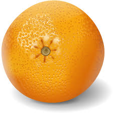
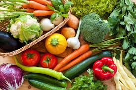
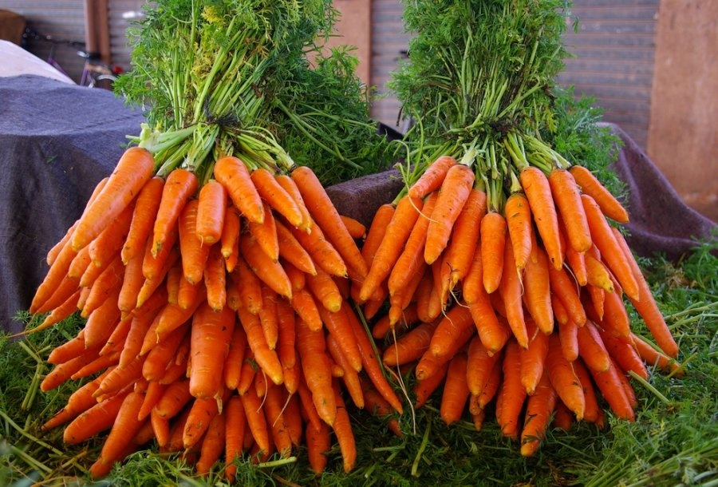

Obuolys – būdingas obelų vaisius, morfologiškai irgi vadinamas obuoliu.
Obuolyje yra 3-5 lizdai su 2-3 sėklomis lizde. Vaisiaus luobelė labai plona, minkštimas sultingas, be sukietėjusių ląstelių.
Prinokę obuoliai būna raudoni, geltoni, žalsvi ar įvairiaspalviai. Mažais obuoliais įvardijami pagal prigimtį maži obuoliai
(pvz., Rojaus obuoliai) arba pradinės nokimo stadijos, dar neprinokę obuoliai. Tradiciškai obuolių rinkimo metu mažus obuolius patikima surinkti vaikams
(iš to ir liaudiškas pavadinimas - kriupius). Maži obuoliai dažnai renkami į pintines, gali būti lengvai veriami ir džiovinami rinkėje, vėlgi skirtingai nuo kitų obuolių,
kuriuos tenka paskleisti plačiai.
50
Apelsinas

Apelsinas – ne tik skanus, bet ir labai naudingas organizmui. Nors jį galima rasti daugumos lietuvių namuose, kai kurios naudingos šio įprasto vaisiaus savybės nustebins.
Pirmiausia apelsinas naudingas tuo, kad palengvina vidurių užkietėjimo simptomus. Apelsinai, kaip ir kiti citrusiniai vaisiai, turi šarminį poveikį, stimuliuoja virškinimo
sulčių išsiskyrimą į žarnyną ir mažina vidurių užkietėjimą.
50
Daržovės

Daržovės – vienmečiai, dvimečiai ir daugiamečiai žoliniai augalai, kurių įvairios sultingos dalys vartojamos maistui. Mitybos prasme nuo
daržovių skiriami vaisiai, kurie dažniausiai auga ant sumedėjusių augalų (medžių, krūmų, krūmokšnių) ir
paprastai būna saldūs. Pvz., braškės ir bananai auga ant žolinių augalų, bet yra vaisiai, o ne daržovės.
Jose yra žmogui būtinų baltymų, angliavandenių, vitaminų, mineralinių druskų ir organinių rūgščių.
Daržovės labai svarbios mityboje. Valgomos kaip atskiri patiekalai, kaip užkandžiai, bei mėsos ir žuvies
patiekalų garnyrai. Jos valgomos šviežios, virtos, keptos, troškintos. Taip pat daržovės šaldomos, džiovinamos, rauginamos,
konservuojamos, sūdomos. Gausiai vartojamos dietinei mitybai.
50
Morka

Nuo tipinės formos skiriasi stora, mėsinga, oranžinės ar gelsvos spalvos šaknimi. Augalas dvimetis – pirmaisiais metais valgomoji
morka auga į skroteles ir šakniavaisius, antraisiais – į stiebus ir žiedynus. Šakniavaisiai iki 30 cm ilgio, sveria iki 200 g
(kartais ir daugiau), būdingai oranžinės spalvos (nors įvairuoja nuo baltos iki violetinės). Lapai plunksniškai suskaidyti, iki 20 cm ilgio.
Antramečiai stiebai (sėklojai) užauga iki 120 cm aukščio, būna statūs arba išsidraikę. Sukrauna žiedynus (sudėtinius skėčius) iš smulkių baltų,
kartais gelsvų, rausvų arba žalsvų žiedelių. Subrandina sausus, dvisėklius vaisius.